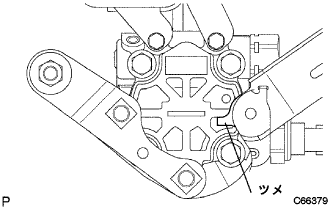
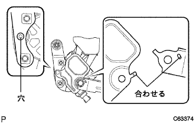
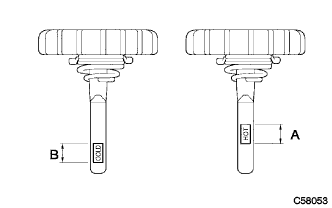

Bane pump assertion |
| 1. Bane pump assertion |
In Bolt A, tentatively attach the vane pump ASSY and attach the V belt.
In the bolt B and bolt C, the Ajiastrazut is tentatively attached.
| 2. Pressive tube Assisted |
 |
Use Union Nut wrench 17 to attach the Betsu Shiya Feed Chew ASSY.
 |
Combine the matching mark and attach the No. 1 hose to the oil reserve ass.
| 3. Bane pump stay RR installation |
|  |
Apply the claws of the Stayia as shown in the figure and attach them to the Houjin Griller.
|  |
Drain the claws of the heat -in -si -yealer in the stayia and attach the bolt.
 |
Attach one clamp of the oil peculatian sensor harness to the oil resava asser and connect the connector.
| 4. Vane pump V belt (power steering belt) adjustment |
 |
Adjust the tension of the V belt and tighten the bolt B for adjustment.
Tighten the fixing bolt A.
| 5. V belt tension / deflection quantity inspection |
 |
Tensions and quantity inspection
| When installing a new one [MM] | At the time of inspection [MM] | |
|---|---|---|
| V belt | 8.0-9.0 | 12.5-13.5 |
| P/S belt | 8-10 | 11-13 |
| When installing a new one [N {kgf}] | At the time of inspection [N {kgf}] | |
|---|---|---|
| V belt | 700-800 {71-82} | 300-400 {31-41} |
| P/S belt | 441-539 {45-55} | 245-343 {25-35} |
| 6. Fan & Alternator V belt installation |
The V belt is temporarily attached to each pulley.
| 7. Fan & Alternator V belt adjustment |
 |
Use a hub nut wrench or bar to draw the alternator to the vehicle front side to adjust the tension of the Juan & Alternator V belt.
 |
Tighten the adjustment bolt A and then tighten the fixing bolt B.
| 8. Power steering fluid replenishment |
| 9. Power steering fluid air removal |
Lift up the vehicle.
Slowly perform the lock -lock of the steering wheels while stopping the engine.
Lift the vehicle.
Start the engine without stepping on the accelerator pedal and leave it for a few minutes.
The engine speed is 1000R/min or less, and the steering wheel lock -lock is repeated several times.
With an engine speed of 1000R/min or less, the steering wheels are kept maintained (holding 5-6 seconds with the steering wheels filled in full) at 2-3 seconds.
After stopping the engine until the oil reservoir bubbles and the cloudiness disappear, the engine starts again and confirms that there is no foaming and cloudiness even if it is locked lock or unpacked in idling rotation.
Perform oil reservoir level level inspection.
| 10. Fluid leak inspection |
Check for fluids from the location in the figure.

| 11. Engine Anda cover RH installation |
With two screws and two bolts, install the engine undercover RH.
Tighten the nut.
| 12. Front tire RH installation |
| 13. Fluid quantity inspection |
Let the vehicle horizontal.
The engine speed is 1000R/min or less, repeating the lock -locking of the steering wheels to increase the fluid oil temperature.
Remove the reservoir bakyatsu from the oil reservoir.
Make sure that there is no fluid foaming and cloudiness from the oil reservoir's mouth.
Measure the difference in the fluid level between the engine rotation and the stop.If it is outside the reference value, the air should be removed.If the effect is not effective without air, check the fluid leakage of the hydraulic system.
|  |
Inspect that the fluid level is within the standard.If it is less than the standard, replenish the power steering fluid so that the upper limit is within the standard range.
 |
Attach a reservoir bakiya tup and reservoir!
| 14. Bane pump oil reservoir cover installation |